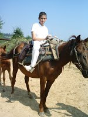

Снаряды рвались всё ближе... Не правда ли, хорошее начало для путевых заметок?
21 век. 2006 год. Вторая половина июля. Север Израиля. Город Кармиэль.
Ещё год назад мы ворчали, обсуждая это дурацкое требование строительных норм о необходимости устройства бомбоубежища в доме. Ведь это так удорожает строительство. А сегодня приходится сожалеть, что это самое бомбоубежище (комната из монолитного железобетона) находится точно на северной стороне дома - с той стороны, откуда уже который день ведётся обстрел севера Израиля и нашего города в частности. Пугали не столько сами взрывы поблизости, сколько беспомощность, неспособность наших правителей и армии защитить себя (нас) в течение такого длительного периода времени. Каждый вечер, ложась спать, думал: вот этой ночью наши ребята накроют все их пусковые установки, а утром вновь просыпался от взрывов и сирен, причём взрывы были раньше (зачем тогда сирены?)
Город опустел. Все, кто мог и хотел уехать, уехали в центр или на юг страны. В городе было неестественно, безжизненно тихо (люблю тишину :) )
Не слышно было даже пения птиц - они тоже перебрались к своим родственникам на юг? Всё вымерло: почта, банки не работали, редкая машина проносилась по улице, всегда на большой скорости, и вновь воцарялась безмолвие до следующей сирены. А в эфире два героя-петуха (премьер-министр и министр обороны) забрасывали шапками врага: "Если только они дострелят до Тель-Авива, то уж мы им..."
О чём это я? Ах, да. О путешествии в Болгарию. Планировали мы эту поездку давно и билеты на самолёт приобрели. Только деньги снять из банка, да права международные сделать не могли в Кармиэле - всё было закрыто. Друзья из центра страны звали к себе - пересидеть обстрелы. Поехали к ним 29 июля, но не спасаясь от войны, а чтобы подготовиться к поездке и сделать всё необходимое. Поэтому наш вояж начался на три дня раньше. После двух недель постоянных обстрелов было дико смотреть на мирно текущую жизнь. Люди гуляют, празднуют, веселятся, не задумываясь ни на секунду о том, что происходит в какой-то сотне километров к северу. Сирена означает только то, что где-то рядом проехала машина скорой помощи...Мы сделали всё необходимое: страховку, международные права. Кроме этого отдохнули, погуляли (спасибо Серёже и Майе, а также Оболтусу) и вот теперь-то о Болгарии. Хотя нет. О Турции. Цены на билеты в Европу были настолько велики, что возникали идеи полететь туда на воздушном шаре, поехать на велосипеде, поплыть на надувной лодке. Но вот в Стамбул можно было добраться относительно дёшево, что мы и предприняли. А там уже рукой подать...
01.08.06
Стамбул - город контрастовИз аэропорта Ататюрк переходим на станцию метро. Вещей - минимум (на каждого - по рюкзаку). Располагаемся в вагоне метро. Смотрю вокруг: люди, районы города (там, где поезд идёт по поверхности), пытаюсь отследить наше местонахождение по названию станций, но мало что получается, т.к. турецкому не обучен. Считаем станции. А едем мы поближе к ж.д. вокзалу, т.к. вечером того же дня оттуда отправляется поезд в Болгарию. Вид у людей более европейский, чем в Израиле, но бдительность превыше всего. И вдруг на весь вагон раздаётся крик. Начинается бурная ссора и даже лёгкая потасовка. По выражениям лиц, движениям, жестикуляции и дислокации сил понимаем, что один запустил руку в карман к другому, пытаясь стырить кошелёк. Вот она, Турция, подумали мы и поплотнее сдвинули рюкзаки. Когда стороны выкричались, постепенно стали утихать и ничего не происходило. Неудачливый вор с обиженным выражением лица остался в вагоне. Бдительный пассажир с негодованием рассказывал окружающим о случившемся, но на этом всё и закончилось.
Выйдя из метро, пошли к вокзалу пешком. На
улице было настолько людно, что с трудом удавалось пробираться в нужном
направлении. Довольно часто слышалась русская речь ("челноки" -
подумал Штирлиц). Народ мой (Римма, Саша и даже Боба)
взмолился - хотят продолжить путь на трамвае. Во избежание бунта на корабле, доехали до вокзала на трамвае. Пошли сразу покупать билеты. Но не у кого. Касса закрыта. Через час открылась, но образовалась очередь. Местный божок (он же кассир) вручную выписывал билеты - полчаса штуку. Наконец и мы добрались до окошка и тут оказалось, что лир нам не хватает, а доллары он не берёт, но для нас, поскольку он видит, что мы хорошие люди, может взять и долларами, но по какому-то странному курсу. Ах, вы не согласны, тогда ближайший обменный пункт - три остановки на трамвае. Согласны, согласны. Нам в Болгарию нужно позарез, да ещё Босфор посмотреть.
Поезд отправлялся вечером, но на кораблике по Босфору уже не успевали. Пошли так посмотреть на пролив. Потом устроились на полянке, где валялись пустые бутылки и кучки мусора. В отдалении, среди картонных коробок спали какие-то люди, которые, проснувшись, устроили между собой небольшую потасовку. Я оббегал всё вокруг, но более цивилизованного места (парк, скамейки, сквер) так и не нашёл. Зато нашёл базар, где трудно отделаться от продавцов, хватающих тебя за руку, узкие колоритные улочки, мечети и храмы, окружённые прихожанами, моющими ноги, маленькие магазинчики с товаром, выставленным на улицу, грязные тротуары и над этим всем - солнце, садящееся за купола. Зато мы сэкономили кучу денег, думал я, ежеминутно глядя на часы. Когда стемнело, мы переместились на вокзал. Там вдоль перрона стояли три скамейки. Удалось занять половину средней. Время шло. Поезд всё не подавали. С опозданием на час пришёл обшарпанный, замызганный, длиной в пять вагонов Восточный Экспресс. Вагоны были выкрашены в разные цвета. Это означало, что все они идут в разные направления. Одни, после Болгарии продолжали свой путь в западном, югославском направлении, другие шли на север, в Румынию. Но вагона с нашим номером в поезде не было и спросить, куда же нам заходить, было не у кого, потому что, как потом выяснилось, проводники заперлись в вагонах и попросту их не открывали. Когда же двери, наконец, открылись и мы зашли в вагон, оказалось, что на наших местах уже сидят. Проводница ничего понять не может. В узком проходе толчея, т.к. у многих ситуация такая же. Мы протолкались в соседний вагон. Там купе с нашими местами было свободно. Мы его заняли. Этот-то вагон и оказался нашим. В общем, когда наконец-то столбы медленно поплыли перед нашими окнами, я подумал, вот же бывают глупцы, пытающиеся сэкономить деньги за счёт времени и удобства.
02.08.06
"И всё меня несёт всё тот же поезд..."Мерно стучат колёса. Прохладный ночной воздух врывается в полураскрытое окно. Я лежу на верхней полке. Не спится. За окном мелькают огни городков, вокзалов, тёмные силуэты деревьев. Давно забытые ощущения наполняют душу...
Мои дети этого не понимают. Они не видели поезда с полками, на которых можно спать. Они привыкли к израильскому поезду, в котором самолётные кресла, который внешне новее, ухоженнее, в котором не открываются окна, потому что всегда работает кондиционер (зимой на обогрев, летом на охлаждение), в котором нет купейных кабин, постелей, встроенного шкафа, проводницы, который за полтора часа проезжает полстраны - не по причине своей большой скорости, а по причине размеров этой самой страны...
В Америке тоже ещё есть поезда. Как атавизм, как вымирающий вид. Мы на этом атавизме в 1998 году ехали из Нью-Йорка в Торонто. Десять часов в самолётном кресле: ни лечь, ни встать. Нет, дети этого не понимают, наверное потому, что в детстве не ездили в Ленинград и в Москву, не пили горячий крепкий чай из стаканов в подстаканниках, не покупали за рубль у проводницы комплект постельного белья ЮЗЖД... Сашка улыбнётся и скажет: " Пять километров в гору" :).
Затем произошло ожидаемое - мы остановились на границе. Я читал об этом в Интернете и морально готовился к этому. Печатное слово не в состоянии передать всю гамму ощущений от этого события. Это была не просто граница, это была турецко-болгарская граница - со всеми последствиями.
Два часа ночи. Громкий стук в дверь купе. Одеваемся, беру с собой кофр с видеокамерой и документы. Всё остальное остаётся в поезде. Народ, перепрыгивая через рельсы с нашей дальней колеи по-одному, по-двое пробирается к зданию вокзала. Следующее препятствие после бега с барьерами в темноте - яма с водой, т. е. подземный переход со зловонной лужей в районе туалета. Дальше - душное, прокуренное помещение с турникетом, в котором сквозь дым просматриваются две очереди из пассажиров нашего Восточного Экспресса. Там, где червяки очередей упираются в окошки, находится источник дыма: два турецких пограничника - один толстый, другой худой. Вот они-то и являются той целью, ради которой и покупаются билеты на поезда. Они те, кто ставит штампики в паспорта. Кого-то они пропускают пренебрежительно быстро, с кем-то ведут долгие задушевные беседы, задают душещипательные вопросы, типа: что делал в Турции? куда едешь? к кому? сколько у тебя денег? И немцы со всякими прочими шведами наклоняются к окошку и, подобострастно улыбаясь, оправдываются за своё столь несвоевременное здесь появление. Через час стояния в очереди и я достаю из широких штанин четыре синекожие паспортины и без единого слова кладу их перед худым с таким видом, что если, мол, будешь слишком любопытным, сейчас подтянутся ребята из Моссада. Тот так же, без единого слова, штампует все четыре паспорта, и мы снова спускаемся в авгиевы конюшни.
Во время всей этой процедуры поезд, купе и вещи пассажиров никем не охраняются. Там вообще никого нет, а пассажиры группками возвращаясь, видимо от полученного шока, даже и не думают о чужих трусах и носках - им бы свои сохранить. Думаю, тут широкое поле для деятельности местных специалистов.
И вот гостеприимная Турция остаётся позади, поезд проезжает 200 метров и снова останавливается. После вежливого стука в дверь, она открывается и там показывается болгарский пограничник. "Наши", - подумали мы со слезами на глазах. Подаём ему наши израильские паспорта и он, конечно, открывает их не с той стороны. Удивляется, чего это такой диковинный народ делает в такое время в такой глуши. Пытается задать пару вопросов по-английски, но, услышав ответы по-русски, успокаивается, облегчённо вздыхает и с улыбкой желает счастливого пути. Счастливый путь продолжился только через три часа, к шести утра.
Раннее утро: восход солнца, прохладный ветерок, зелень лесов, ширь полей, уют деревушек, изгибающееся русло реки - за окном проплывает Болгария.
" Мой сон истлеет тихо на заре.
Пейзаж степей, река в лучах рассвета.
И гром гремит, и ливень будет. Это -
Мой дом. Я здесь... И август на дворе..."
- произносятся сами собой строки в такт стуку колёс, в такт порывам ветра, в такт моим мыслям, в такт настроению. Это - мой - дом. - Я - здесь...
В Пловдив мы приехали с опозданием, но всё же утром. Сдали рюкзаки в камеру хранения (а в Турции - не было) и пошли гулять по городу. Я, конечно, тут же купил карту, и мы пошли по улицам, площадям, тенистым скверам. Над горой стоял Алёша... Забрели в старый город - очень колоритный, покрутились по его узким мощёным улочкам, вышли в современную часть с широкой и красивой пешеходной зоной. Оттуда - в парк. В парке – деревянный ресторанчик, прудик, скамеечки в уютных уголках.Через Пловдив протекает река Марица. Это вторая по величине (после Дуная, естественно) река Болгарии. Она впадает в Эгейское море. Шли к реке через весь город, предвкушая виды берегов, спокойную (или бурлящую) воду, архитектуру набережной... Ничего этого не было. Включая течение. Течения тоже не было. Было какое-то количество разрознённых луж, поросших камышами, и через эти лужи перекинуты два моста. Пережив насмешки спутников ("Ну, это и есть великая болгарская река?") Штирлиц подумал, что было засушливое лето, а вот, наверное, зимой!..
С Людмилом и Наташей, нашими болгарскими друзьями, как и договаривались предварительно, встретились вечером в этом парке. Загрузились в броневичок - минибус без задних сидений и окон. Людмил - за рулём, женщины - на передних сидениях, а я с Сашкой и Бобкой - сзади, на брошенном на пол матрасе. Романтика. Мы направлялись в Сестримо - деревушка, в которой поселились Наташа и Людмил после переезда из Варны. В Сестримо нас ждала квартира со съестными запасами на неделю и цветочками на балконе, которые нужно было поливать. Оговорили культурную программу на несколько дней. "Завтра утром, - сказал Людмил, - во дворе вас будет ждать мой друг Данчо. Вы его узнаете - он высокого роста, худой и с длинным носом. Уверен, вы друг другу понравитесь. Поедете кататься на лошадях." (При слове "лошадях" у Бобки загорелись глаза).Ребята оставили нас одних, а сами уехали в горы, в посёлок Юндола, где проводили лето, спасаясь от жары.
03.08.06
Мы красные кавалеристы.*Красные - т.к. было ну очень жарко.
Выглянув утречком в окно, я увидел тени от двух предметов. Первую отбрасывал стоящий во дворе орех, вторую - нос (вы догадались - Данчо уже поджидал нас). С Данчо мы сразу нашли общий язык (русско-болгарская смесь). Он очень переживал, что не может разговаривать с нами по-русски, а я ему пытался объяснить, что в том нет его вины, более того, мы находимся в Болгарии, где более естественным кажется его язык и выражал сожаление, что я не подготовился к общению на болгарском. Так мы подошли к его, Данчо, дому, познакомились с его женой Светлой. Взяли лошадку, её жеребёнка и начали свой поход, который можно было бы назвать "Трое на лошади". Вы только не подумайте, что мы втроём взгромоздились на бедную кормящую лошадь. Ей приходилось терпеть нас по очереди. Почему троих, а не четверых? - Это не мой транспорт. Когда я сел на лошадь, мы с ней почувствовали взаимный дискомфорт. Мне показалось, что у неё подо мной подгибаются ноги, и я пожалел бедное животное. Что лошадь подумала - она не высказала вслух, т.к. была хорошо воспитана.Но было очевидно, что наибольшую симпатию она испытывала к Бобе, справедливо полагая, что раз он такой худой, то сила тяжести действует на него в противоположную сторону. Так же худ был и Данчо. И они вместе с лошадью составляли передовой отряд. Римма, Саша и я, отбиваясь от мух, плелись в арьергарде, а жеребёнок, носясь то вперёд, то назад, выполнял функции посыльного.
-Групата! - периодически взывал к нам Данчо, что ассоциировалось с русским "та ещё группа!" -Куда мы идём, Данчо?
-До горизонту... и обратно, - последовал ответ.
А шли мы по райским местам предгорьев Рилы, вдоль лесного ручья, через холмистые луга, через пастбища, цветущие полевыми цветами, звенящие пением птиц, гудящие жужжанием пчёл, опьяняющие запахами трав; мы шли "до горизонту и обратно".
После прогулки зашли домой к Данчо и Светле. Пили чай, болтали. Светла хорошо говорит по-русски, но мы с Данчо так научились понимать друг друга, что перевод часто и не требовался. На прощание Светла подарила Римме тапочки, которые сшила сама.
Затем пошли гулять по Сестримо. Большая зелёная деревня, с протекающим через неё ручьём. Красивые места, вокруг лес. На улицах плодовые деревья, кусты ежевики. Вечером - после обхода - домой. Полить цветы, принять душ, спать. Завтра - поход с Данчо к водопаду.
04.08.06
Теория относительности: много воды в водопаде - это хорошо, под унитазом - плохо.Утром во дворе нас снова ждали две тени. В поход к водопаду собрались мы с Бобой в сопровождении Данчо. Римма, Саша и лошадка взяли больничный после вчерашнего. Втроём, в хорошем темпе, мы вышли из Сестримо в направлении леса с протекающим в нём ручьём и пошли вдоль ручья. Опять запах зелени, влаги, ежевика по обочинам тропы. И вот послышался шум падающей воды, а затем стал виден сам водопад. Мы с Бобой зашли в воду у подножья водопада. Вода обжигающе холодная и кристально чистая. А вокруг - лес. Данчо остался возле водопада на полянке, и когда мы вернулись, там уже горел костерок, поджаривались перцы и мясо, Данчо заканчивал делать посох для меня. В его руках материализовалась четвертушка "Мастики" - анисовой настойки. Вот с неё-то мы и начали. Завтрак в хорошей компании, в лесу, под шум водопада - что может быть приятнее?
Днём за нами заехали Людмил с Наташей, и мы на том же броневичке поехали к ним в Юндолу. Дорога поднималась в гору по живописнейшим местам - через лес, над ущельями, вокруг высокогорного озера Белмекен. В Юндоле мы расположились во воторой половине каравана, который снимали наши друзья. Жильё было довольно неоднозначно. C одной стороны мы расположились в трёхкомнатной квартире с кухней, кроватями, туалетом, душем, с другой стороны - кровати были продавлены настолько, что попа едва не касалась пола, а унитаз протекал в самом неподходящем месте так, что мы трижды думали, перед тем, как решались зайти в туалет, зато в душе напор был очень слабеньким. Мы могли выбрать квартиру получше и чуть подороже, но предпочли быть в одном домике с ребятами. К тому же прямо за домиком был лес! Настоящий! Кому непонятен мой восторг, напомню, что последние 16 лет мы живём в Израиле...Побросали вещи и поехали в Велинград, находящийся в 16 км от Юндолы. Красивый городок, в котором есть бассейны с водой из минеральных источников. Поплавав в бассейнах, мы пошли гулять по вечернему городу. Очень красивый, небольшой ухоженный городок с пешеходной зоной в центре, с улыбающимися людьми, лотками с мороженым всевозможных вкусов на каждом шагу, с фонарями, освещающими променад... В Израиле шёл 20-ый день войны...
05.08.06
Рыба будет!Я проснулся рано. Как можно спать в таком
месте? Хочется облазить все уголки, увидеть все красоты и дышать, дышать... Все
ещё спят. Я пошёл (пошёл - это когда далеко, а так - заглянул) в лес. Сосны
изрешетили небо. Из-под ног при каждом шаге раздаётся шорох лежалой хвои и
треск ломающихся веточек. Если разгрести хвою, видны широкополые шляпки грибов,
а если наклониться, то под листиками виднеются красные капли земляники. Черника
растёт на каждом шагу. А воздух прохладен и свеж. И утренняя звенящая тишина
вокруг... Затем подтянулась и Римма.
Но вот и Боба дождался своего счастья - поехали с Людмилом на рыбалку. Серпантин горной дороги привёл нас к прудику, где разводят рыбу. Удочку и наживку выдают на месте. Несколько рыбаков уже стояли у воды и периодически дёргали удочки с обглоданной наживкой. И тут за дело взялся Людмил. Он поймал первую рыбу, показал Бобе норвежские приёмы и работа пошла. Удочку успевали только забросить и тут же приходилось её вытаскивать, уже с трепыхающейся форелью. Соседские рыбаки потихоньку стали стекаться к нашему месту, полагая, что именно оно определяет улов. Но удочки, заброшенные ими в двух метрах от нашей, даже не дёргались. Наловив достаточно рыбы "норвежским методом", мы, заплатив на выходе, тронулись в обратный путь.
-Ну ты специалист,- сказал я Людмилу.
- Да нет, пруд такой маленький и в нём столько рыбы, что не поймать сложнее, чем поймать. Даже стыдно перед рыбой :)
На обед была запечёная на мангале форель, перцы, картошка, салат - вкуснотища!
После обеда пошли гулять по Юндоле. Туда приезжают люди из Софии, есть иностранцы – покупают или строят дома – оценили преимущества местности, да и сами этим украшают и обустраивают посёлок. Люди здороваются, вступают в разговор, ведут себя очень доброжелательно, а когда узнают, что мы из Израиля – выказывают ещё большее уважение. К вечеру небо затянулось тучами. Вдалеке стали слышны раскаты грома. Над соседней цепью гор стали сверкать молнии – толстые и ветвистые, и гром стал громче и резче. И вот, наконец, стукнули по крыше первые тяжёлые капли, зашуршала трава, и хлынул ливень. Вспышки молний озаряли окрестный пейзаж. Раскаты грома, шум дождя, свежесть воздуха…
« И гром гремит, и ливень будет. Это – мой дом. Я здесь. И август на дворе…»
Мой дом… Я здесь… Август… Вечер…
Мы пьём чай под навесом у дома. Разговариваем. Молчим. Слушаем дождь…
06.08.06
Паровозик из Ромашково.Со станции Добриниште пошли пешком в сторону гор, вверх – в Банско. Проходим красивые старые дома, новые шикарные отели, выходим к лесу, всё выше, к подъёмникам на горнолыжные трассы. Лес, ручей, в лесу красивый отель в деревенском стиле. Небольшой отдых во дворе отеля – и в обратный путь, уже вниз. В Банско зашли в ресторанчик попить пива. Сидели во дворе, через который протекал ручей, охваченный каменными берегами. Над ним – беседки с деревянными столиками и скамейками. Сидим, слушаем журчание ручья, пьём холодное пиво из высоких запотевших бокалов… Благодать.
Обратный путь: паровозик, броневичок, Юндола. А вечером нас ждал костёр, жареная рыба, белое вино, дружеское общение за чаем.
07.08.06
Болгарская СкандинавияНочью была гроза. Гремел гром, вспышки молний прорезали темноту, дождь хлестал по крыше… Как сладко спалось, укутавшись одеялом!
Утренний лес звенел свежестью, блестел каплями росы. Ягоды земляники проглядывали сквозь зелень травы. Пели птицы…
Мы сегодня уезжаем в Софию. Небольшая прогулка по Юндоле, беседа с местными жителями – и Людмилов броневичок покатил нас на ж.д. станцию в Белово. Дорога сказочной красоты – через лес, над ущельем. Виды открываются – дух захватывает. Дорога узкая – две машины разъедутся с трудом, только где ж там взяться другой машине?! Над озером Белмекен низко висели серые тучи. Окружающие горы проступали из-за тумана. Луч солнца, прорвавшийся сквозь тучи, серебрил рябь водной поверхности, и это создавало нереальную картину, когда пространство внизу светлее пространства вверху. Зловещая красота царила вокруг – глаз не оторвать. Я никогда не был в Скандинавии, но представляю, что норвежские фьорды должны выглядеть примерно так же. Я попросил Людмила остановиться и пока мы таращились на эту красоту, из кустов вышел котёнок, худющий, облезлый, с перебитой лапкой. Наташа вынула вещи из сумки и в неё поместила котёнка. Ему суждено было выжить. В Белово мы попрощались с ребятами, дождались поезда и поехали в Софию. Это был не очень быстрый поезд, видимо, его собирали в Эстонии. К вечеру мы были в Софии. Сели в трамвайчик и поехали к Рае. Видимо, природа решила воздать мне за любовь к этим местам – в трамвай мы садились под проливным дождём и все пять остановок, что мы ехали, струйки воды по диагонали пересекали окно трамвая.Пришли домой. Встреча с Раей и Лёней. Дома усидеть не могли – раскрыли зонтики и пошли гулять по дождливой вечерней Софии. Огни реклам расплывались отражениями на мокром асфальте, и мы шли по этим отражениям, на некоторые наступая, через некоторые перепрыгивая.
Лёня с Раей очень тепло встретили нас, мы вместе поужинали. Спать…
08.08.06
София.София не избалована вниманием, а тем более лестными эпитетами туристов. Она не столь красива, как Прага, не столь роскошна, как Вена, не столь празднична, как Париж. Но присутствует в ней удивительное обаяние и спокойствие. Улица Витоша – широкая, ровная, с трамвайными линиями, с магазинами в цоколях домов – утопает в зелени каштанов. Мы идём по Софии, дышим её воздухом, впитываем её атмосферу. Церковь «Света Неделя» - маленькая и красивая. Собор Александра Невского – огромный и величественный. На улице Цар Освободител – памятник императору Александру. История Болгарии запечатлена в названиях её улиц, носящие имена российских полководцев. В каждом городе вы найдёте улицу генерала Скобелева, капитана Андреева, Раковского, Гурко. Пройдя спорткомплекс, зашли в Борисову градину (был дождь) – лесопарк с пешеходными дорожками, раскинувшийся на довольно большой территории. За ним, уже в жилом районе, на вишне висело несколько ягод. Боба их сорвал и каждый из нас съел по две вишенки. Затем был ресторанчик, в котором мы с Борей обедали в наш с ним приезд сюда в 2002 году. Огорчило, что порции стали images меньше, цены выше, а фонтан с водоёмом оказался без воды, обнажив серое бетонное дно, на котором лежали кучки мусора. По пути домой отдохнули на травке в сквере, зашли в большой торговый центр, где смотрели мебель, видеокамеры, компьютеры – просто так.
09.08.06
Ангел-хранитель и пистолет Глок.…В Израиле продолжается война, каждый день север страны, в том числе и наш родной город,images подвергается обстрелам…
Вечером прошлись вдвоём с Бобой по вечерней Софии. Боба фотографировал огни реклам, освещённые неоновым светом вечерние улицы. Я служил ему штативом. Площадь, которую в народе называют пятиугольником, т.к. в неё с images разных сторон вливаются пять улиц, освещена сияющим с высоты цветным словом «Каменица». (Лично мне это слово нравится со всех позиций – и на взгляд, и на слух, и уж, конечно, на вкус.)Ушли далеко – атмосфера вечернего города увлекла нас в сети своих улиц. Мокрый асфальт отражал огни города, свет шёл отовсюду, а вдали ярче всех горела «Каменица».
10.08.06
Летний дождь в городе или дождливый город летом.Дождь. Летний дождь – вот чего мне так не хватает. Серое низкое небо, серый мокрый асфальт, шум дождя и капли, барабанящие по зонтику. Пройти по узким второстепенным улочкам, затеряться в них, заблудиться, слиться с городом, а вокруг дождь, дождь, дождь…
11.08.06
София – Велико Тырново – ВарнаСегодняшняя картина напоминает ту, прошлую. Автобус шуршит по мокрому асфальту дороги, пересекающей горы Стара Планина. По обеим сторонам зелёные склоны гор, утопающие в тумане. Из тумана выныривают деревенские дома, ручьи, колодцы, мостки. Мы отдаляемся от Софии, углубляясь в туман, выхватывая из него указатели: Яна, Елешница, Витиня, Разлив… Можно бы поспать, но не могу оторвать взгляд от окна…
Подъезжаем к Велико-Тырново - погода расходится, дождя нет, солнце светит. Спрашиваю пассажира, сидящего за нами о том, где нам лучше выйти в городе. Тот, кроме ответа на вопрос, даёт нам географический и исторический обзор о городе со сведениями о социалистическом и современном положении экономики. А также посоветовал, какие места в городе стоило бы посмотреть, и дал их описание, а также указал их на моей карте. Всё чётко и понятно на превосходном русском языке. Я, конечно, спросил, как его зовут. Он представился: Данко Данков, профессор географии университета Велико Тырново. Я представился ему тоже, и до приезда автобуса в город, у нас ещё был десяток минут для приятной беседы.
В городе три части – средневековая, эпохи Ренессанс и социалистического периода. Каждая из частей, как вы понимаете, имеет собственную архитектуру, вид и стиль. Мы прошлись по улицам города, заглянули в парк, затем поднялись на холм в старом городе, на вершине которого сохранилась средневековая крепость и храм. Войдя в храм, мы услышали пение. Под сводом расписанного купола звучало сопрано. Это одна из посетительниц вознесла молитву в таком виде, а нам посчастливилось это услышать. С этого холма открывалась панорама на город. Затем мы прошли по городу – улочки, церквушки, мосты. Зашли в отдалённый район, перешли по мосту через речушку на противоположный берег и там остановились перекусить. Расположились на улице под зонтиком, едим. Подходит худощавый мужчина и говорит: - Извините, я услышал, что вы говорите по-русски. Разрешите, я вам что-то покажу,- разворачивает длинный свёрток, из которого достаёт шпагу и штык. Эти вещи,- продолжает он, - времён войны за освобождение Болгарии от Турции русской армией. – Петко Сливов, - представился наш собеседник, и мы с ним ещё побеседовали об истории и современности. В конце разговора Петко подарил нам карту города времён социализма на русском языке.
Прогулявшись ещё раз по улочкам города, мы вышли к автобусной станции, забрали вещи из «камеры хранения» (просто оставили в уголке в комнате билетёрши) и направились дальше на восток, в Варну.
Вечером, уже в темноте, нас подобрал Толя и повёз в старый добрый Ракитник ( как я люблю это место!). А там все трое Михалевых сыновей – Стефан, Толя и Петя со своими жёнами – подругами кормили нас во дворе, в беседке. Мы наслаждались встречей, беседой, ночной тишиной и… пивом.
12.08.06
Золотые Пески
13.08.06
В поисках Скайпа и сковородкиС утра прошлись по Ракитнику – он изменился со времени нашего последнего его посещения. Домов стало больше, дома стали побогаче. Дорога на пляж проходит через лесок, рядом с полем, мимо поспевшей алычи, вниз к оврагу – вот она, перевёрнутая лодка, неизменный навес с холодными напитками и горячей кукурузой. Налево вдоль моря последовательно: рыбаки, нудисты, дикари с палатками; направо: пляж санатория «Черноморец» и выдающиеся в море скалы. Что там, за скалами, за поворотом, я и решил проверить. Не то, чтобы я ожидал там увидеть секретную базу инопланетян или край земли, соприкасающийся с твердью небесной, но вышеописанные кнопки в заднице не позволяют мне долго находиться на одном месте, к тому же незнакомом. И вот я, искупавшись, пошёл в направлении правого горизонта. За скалой, выдающейся в море, оказались… (вы не поверите) те же камни, тот же песок, то же море, но… На горизонте снова высилась скала, вдающаяся в море. Перенести это было невозможно, и я направился туда. Так вот, это у них береговая линия такая: дуга пляжа, упирающаяся краями в море, за ней - следующая, следующая… В общем, я дошёл до Паша. Несколько утомился. Вопрос даже не в том, какое расстояние я прошёл, а в том, в каких условиях. Идти босиком по раскалённому песку было просто невозможно. Пришлось надеть сандалии. Песок забивался в них, натирая и раня кожу, поэтому до границы с Турцией я решил в этот день не идти. Повернул на запад, от моря, предположительно к дороге. Идти по грунтовке стало легче, но натёртые ноги всё равно саднили. Пытался остановить машины, ехавшие в моём направлении, но на сей раз безуспешно. Я этому не особенно огорчился, так как думал, что вот-вот выйду на трассу, а там по асфальту будет ещё легче идти, и тогда я быстро доберусь до Ракитника. Как я ошибался! Я вышел к какому-то пансионату, очень живописному, находящемуся в лесу. В это время оттуда отъезжала машина, и я попросил водителя подбросить меня к Ракитнику, если он едет в ту же сторону. На моё счастье он согласился. По дороге мы разговорились. Димитар (так звали водителя), говорит на русском языке, как на родном и оказалось, что он был моём родном городе Виннице по работе на электростанции. Мы обсуждали жизнь в Израиле и в Болгарии, а когда Димитар остановился возле Ракитника, я понял, что мы ехали довольно долго, и что покрыть такое расстояние пешком было бы крайне затруднительно. А вот встречи с интересными людьми оставляют чувство удовлетворения так же, как и посещение красивых мест.
Дома к тому времени уже стояли на ушах по поводу моего исчезновения. Когда я всё же вернулся, стали готовить обед. Нужна была сковородка, картошка у нас была. Огляделись – на поверхности сковородки не оказалось. На полках – тоже. В шкафчиках – тоже. Под кроватью, в душевой – та же история. Переискали везде – безрезультатно. Пришлось картошку варить – в кастрюле. А когда она уже сварилась, Боба открыл духовку… Там стояла и укатывалась со смеху сковородка, точнёхонько на том самом месте, где стоит наша сковородка у нас дома.Воодушевлённые успехом, подкрепившись, то и дело сползая под стол от приступов хохота, пошли искать Скайп, чтобы связаться с нашими в Израиле. В духовке Скайпа не оказалось…
Вечер провели со Стефаном, Толей и Петей, с их жёнами-подругами. Расположившись во дворе у стационарного мангала, болтали, пили пиво, ели мясо, салаты. Замечательные ребята – добрые, отзывчивые, работящие, юморные.
В молодёжной компании мы чувствовали себя их сверстниками.
Вокруг темно - это как раз то место, где можно поднять голову вверх и увидеть звёзды, много звёзд, всё небо в звёздах. И – август – метеориты, горящей спичкой, проносящиеся по небу. И цикады в ночной тишине.
14.08.06
КамчияПоехал рейсовым автобусом в Камчию. Там река Камчия впадает в Чёрное море, а по обоим берегам реки – заповедник. Места очень красивые, зелёные. Дачный посёлок, расположенный у устья реки, очень живописный – домики, утопающие в зелени, без роскоши, но со вкусом. Тихое и тенистое место. На базе отдыха размещена молодёжь из Москвы. Они сочетают отдых на море с соревнованиями по пляжному волейболу.
А сама база расположена в лесу. Я погулял по лесу, по берегу моря, перешёл вброд реку. На том берегу - рыбацкие лодки, накрытые рыболовными сетями.
Нагулявшись по этому чудному месту, выхожу к трассе на Варну и тут обнаруживается, что ближайший (а заодно и последний) автобус идёт только вечером. Женщина из придорожного киоска бросается выяснять с кем меня можно отправить в Варну. Я же тем временем беседую с работником базы отдыха на политические темы, и он, узнав, что я из Израиля, советует мочить палестинцев в сортире. Вскоре находятся два мужичка на «Жигулях», согласившихся отвести меня в Галату, но с условием, что мы остановимся в придорожном кафе попить простокваши. Что ж, поедем в Галату через простоквашу. По пути болтаем – Димитар (снова Димитар!) и Пламен хорошо говорят по-русски. Заезжаем в красиво оформленное кафе у дороги, садимся за столик на веранде, пьём вкусную (действительно очень вкусную) простоквашу и тут во дворик на чёрном БМВ, на высокой скорости врывается лицо «тёмной национальности». Через опущенные стёкла орёт музыка. Машина резко тормозит и из неё выходит само «лицо» - цыган в спортивных штанах и крутой раскоряченной походкой идёт к кафе.
- Это наши палестинцы,- говорит Димитар.
- Мощный мотор – слабые мозги,- невозмутимо констатирует Пламен.
Когда мы допили простоквашу, я вынул кошелёк, чтобы заплатить за всех, но Димитар и Пламен замахали на меня руками, спрячь, мол, ты наш гость, и мы тебя угощаем. Было и неудобно и приятно одновременно.
Ребята довезли меня до Галаты, мы тепло попрощались, и я пошёл пешочком в Ракитник. В море резвилась стая дельфинов, по сторонам – пасторальный пейзаж, я иду на крейсерской скорости домой…
15.08.06
Варна16.08.06
Пляж РакитникаВесь день провели на пляже. С одной стороны кнопки в заднице (это литературное слово?) не дают спокойно сидеть на месте – я прошёлся в одну сторону до камней и скал, там, где рыбацкая хижина, в другую – до скал; с другой стороны – тёплый мелкий песок, ласковое море, шум волн, крики чаек – навевают леность и спокойствие, ощущение ценности, неповторимости и скоротечности каждого проживаемого мгновения.
17.08.06
НесебрНе усидел дома – поехал Несебр, один. Мои отдыхали от лежания на пляже. Очень красивый город. Узкие живописные улочки с каменно-деревянными домиками, улицы с сувенирами, туристы. Красивая набережная и причал. В общем, очень колоритный городишко. Неподалёку от Несебра находится Сълнчев Бряг (Солнечный Берег) – прошёл туда пешком, интересно было увидеть курорт, о котором так много слышал. Справа – море, слева – фешенебельные гостиницы различной архитектуры и дизайна. Особенно запомнились «Чайка» и Victoria Place – глядя на эту, возникали ассоциации с Прагой. Пляжи широкие и многолюдные. Атмосфера расслабленности и отдыха.
18.08.06
День покупокЭта прогулка по Варне носила чисто меркантильный характер. Купили Римме куртку, глиняные глазурованные горшочки, набор – солонка и перечница. К вечеру снова пошли на пляж.
19.08.06
ПляжПля-я-я-ж-ж.
20.08.06
Аспарухово21.08.06
Варна – СтамбулТоля отвёз нас на автовокзал. Попрощались. Очень не хотелось уезжать, мне по крайней мере. К ландышам добавили подорожник, росший на тротуаре, под мощными липами. Автобус увозил нас на юг, через Бургас (знаете, красивый город) к турецкой границе. Опять граница, таможня. Въезжаем в Стамбул – проехали через довольно симпатичный район, но перегруженный транспортом. Продирались сквозь пробки. Муравейник. Сели на автостанции в метро и сразу поехали в аэропорт, несмотря на то, что до вылета самолёта была ещё куча времени. До того не хотелось снова окунаться в этот город.
22.08.06
ДомойИтак, в ожидании нашего рейса мы семь ночных часов провели в здании аэропорта. Тошниловка ещё та. Пытаясь её скрасить и в то же время потратить ненужные в будущем турецкие лиры, мы периодически бегали к автомату покупать мокачино. Потратив все лиры, посчитали себя удовлетворёнными, но ещё больше были счастливы, когда, наконец, утром приземлились в Израиле. К тому времени бесславная Вторая Ливанская закончилась…
{kind=link}
{kind=link}
{kind=link}
{kind=link}
{kind=link}
{kind=link}
{kind=link}
{kind=link}
{kind=link}
{kind=link}
{kind=link}
{kind=link}
{kind=link}
{kind=link}
{kind=link}
{kind=link}